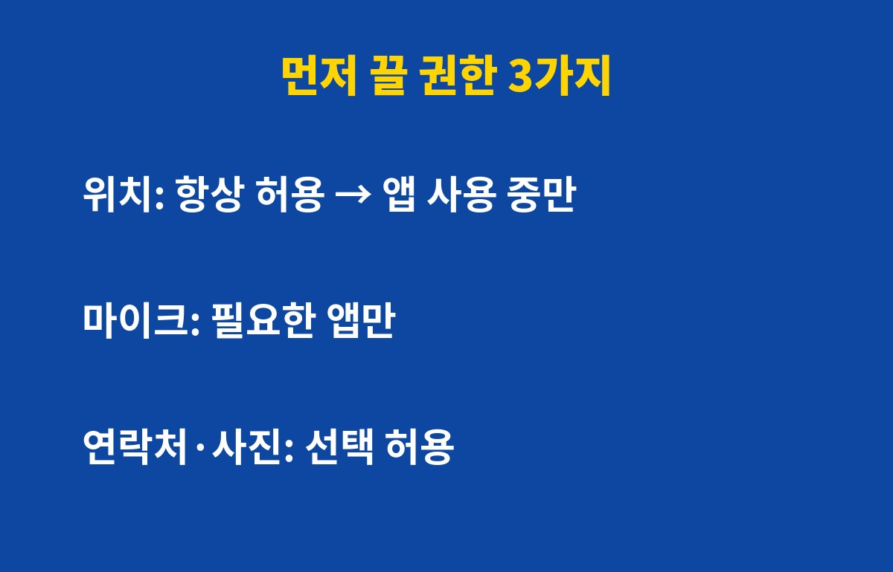

앱 권한을 한 번도 점검하지 않았다면 스마트폰을 쓰는 분 대부분이 해당돼요. 내 위치와 마이크, 연락처를 어떤 앱이 몰래 들여다보고 있는지 궁금하지 않나요?
앱을 처음 설치할 때 "허용"만 연타한 경험, 다들 있죠. 문제는 그 허용이 그대로 남아 몇 달, 몇 년씩 이어진다는 점이에요. 안 쓰는 앱도 위치와 사진 접근 권한을 계속 쥐고 있을 수 있어요.
권한이 많을수록 앱 하나가 해킹되거나 정보가 유출됐을 때 피해 범위도 커져요. 그래서 권한 정리는 가장 돈 안 드는 보안 습관이에요.
모든 권한을 다 끌 필요는 없어요. 아래 세 가지만 먼저 손봐도 체감이 커요.
| 권한 | 추천 설정 | 이유 |
|---|---|---|
| 위치 | 앱 사용 중에만 허용 | 이동 경로가 계속 쌓이는 걸 막아요 |
| 마이크 | 꼭 필요한 앱만 | 통화·녹음 앱 외에는 필요 없는 경우가 많아요 |
| 연락처·사진 | 선택한 항목만 허용 | 전체 접근을 막아 유출 위험을 줄여요 |

안드로이드는 설정 > 개인정보 보호 > 권한 관리자, 아이폰은 설정 > 개인정보 보호 및 보안에서 항목별로 어떤 앱이 접근 중인지 한눈에 볼 수 있어요. 기종과 OS 버전에 따라 메뉴 이름은 조금 다를 수 있어요.
항목을 눌러 들어가면 앱 목록이 나오는데, "이 앱이 왜 이걸 필요로 하지?" 싶은 곳부터 '허용 안 함'이나 '앱 사용 중에만'으로 바꿔주세요. 계산기 앱이 위치를 요구한다면 이상 신호예요.
대부분은 문제없어요. 정말 필요한 기능이면 앱이 그때 다시 물어보니까, 그때 허용하면 돼요. 지도 앱은 위치가 필요하지만 쇼핑 앱은 보통 필요 없죠.
첫째, 앱을 새로 깔 때 권한 요청 창에서 '이번만 허용'을 먼저 눌러보세요. 둘째, 한 달 이상 안 쓴 앱은 과감히 삭제하세요. 셋째, 분기에 한 번 권한 관리자를 열어 점검하는 날을 정해두면 좋아요.
5분이면 끝나는데 효과는 오래가요. 지금 설정 앱부터 열어보세요. 도움이 됐다면 구독해두고 다음 IT 꿀팁도 받아가세요!
기사·공식 발표 기준이며 출시·가격 정보는 바뀔 수 있어요.